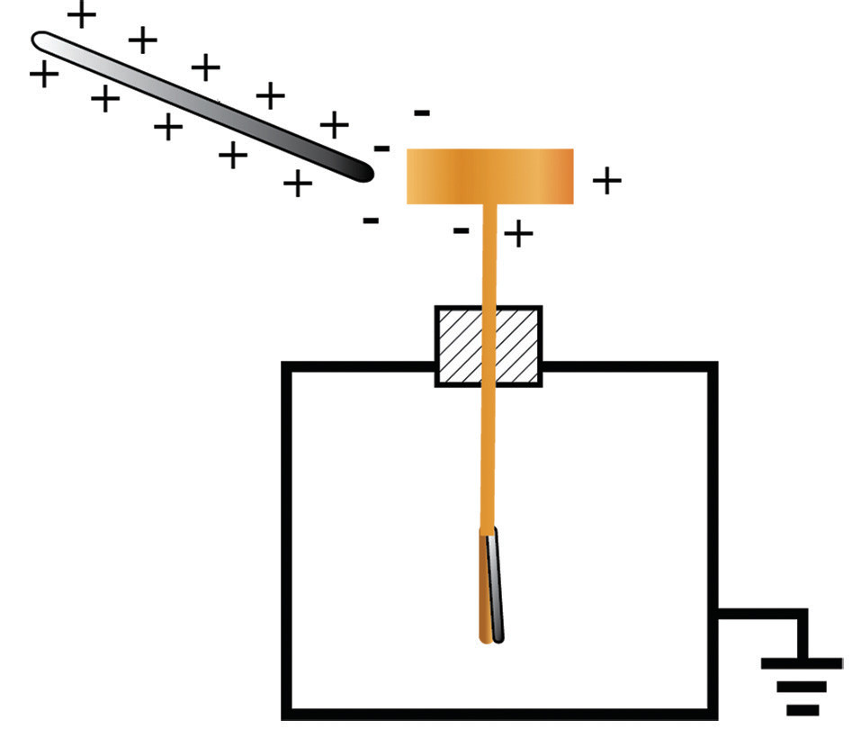
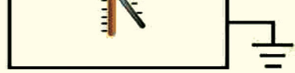

When the negatively charged rod is brought into contact with the electroscope, the latter gets charged and the leaf diverges.
It acquires a negative charge.
The charge on the electroscope can be determined by testing using the charged glass rod.
When a positively charged glass rod is brought near the brass cap, positive charges on the cap are repelled towards the brass plate.
Therefore, the plate becomes positively charged.
This causes the leaf to collapse, as shown in Figure 1.21.

Charged glass rod
Figure 1.21: Testing a charged electroscope by using a charged glass rod
Charging an electroscope by induction
Having learnt how to charge an object by induction, the same method can be applied to charge a leaf electroscope.
In this process, a positively charged electrophorus is advised.

Activity 1.8
Aim:
To charge an electroscope by induction using a positively charged electrophorus
Materials:
electrophorus, glass rod, ebonite rod, silk cloth or fur, leaf electroscope
